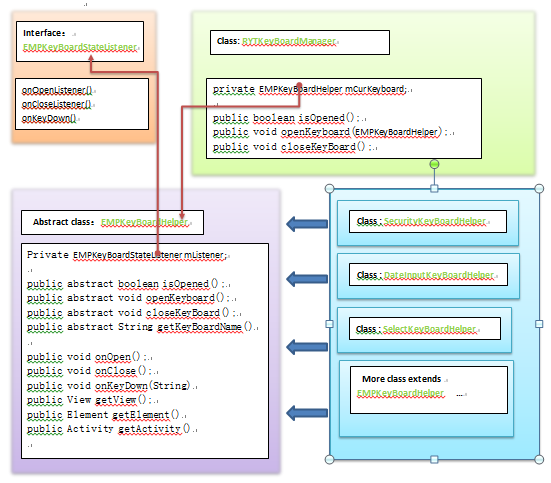

内容概要
1.关于系统键盘的一些设置以及注意事项
2.项目自定义键盘的方式
一些表示方式
键盘高度：keyboardHeight;
屏幕高度：screenHeight;
popupwindow高度:popHeight;
输入框距离popWindow顶部：viewTop;
输入框高度：viewHeight;
inputMode系统键盘可以通过在代码中设置getWindow().setSoftInputMode(inputMode)或者在Manifext.xml中指定android:windowSoftInputMode="Mode"来指定键盘的弹出方式.其中inputMode包括以下三种模式：
inputMode=WindowManager.LayoutParams.SOFT_INPUT_ADJUST_RESIZEinputMode=WindowManager.LayoutParams.SOFT_INPUT_ADJUST_PANinputMode=WindowManager.LayoutParams.SOFT_INPUT_ADJUST_UNSPECIFIEDinputMode=PAN的原因目前我们的body继承自 AbsoluteLayout ，然后 AbsoluteLayout 上添加 scrollView+fixedView 。 body初始化时 mScrollView 的 LayoutParams-height 为LayoutParams.MATCH_PARENT(即mScrollView的高不固定) , 当有fixed的控件时，mScrollView的LayoutParams-height调整为Screen.mAppBodyHeight-mLayout.getFixedTop()-mLayout.getFixedBottom()(即mScrollView的高固定)。
当body没有fixedView时，mScrollView的高度不固定，inputMode=RESIZE时
mScrollView会被挤压,inputMode=PAN时，mScrollView会被会被上移，两者均可以满足键盘不遮挡输入框。
当body有fixed的控件时，mScrollView的高度被固定，inputMode=RESIZE失效，因此我们需要指定inputMode=PAN。
如果body上的输入框被系统键盘遮挡，请增加以下代码：
在manifest.xml中定义
<activity
...
android:windowSoftInputMode="adjustPan">
或者在代码中定义getWindow().setSoftInputMode(WindowManager.LayoutParams.SOFT_INPUT_ADJUST_UNSPECIFIED);
inputModeinputMode=WindowManager.LayoutParams.SOFT_INPUT_ADJUST_RESIZE 的方式会使得键盘挤压popWindow，popWindow高度变小并整体上移，当（viewTop+keyboardHeight）> screenHeight不适用，即popWindow移动到了屏幕最顶部也依旧被键盘挡住。inputMode=WindowManager.LayoutParams.SOFT_INPUT_ADJUST_PAN的方式会使得popWindow的根view在popwindow内整体向上移动，当 popTop-viewHeight<keyboardHeight 不适用，即输入框移动到了popWindow最顶部也依旧被键盘挡住。inputMode=WindowManager.LayoutParams.SOFT_INPUT_ADJUST_UNSPECIFIED表示系统根据情况来选择是PAN/RESIZE。但是设置了该值也并不能保证系统能够聪明的选择正确的方式。 inputMode mPopupWindow.setInputMethodMode(Popupwindows.iNPUT_METHOD_NEEDED);
mPopupWindow.setSoftInputMode(WindowManager.LayoutParams.SOFT_INPUT_ADJUST_UNSPECIFIED);
if (mSpaceRect.top > Screen.mHeight * 0.5) {
mPopupWindow.setSoftInputMode(WindowManager.LayoutParams.SOFT_INPUT_ADJUST_RESIZE);
}
if(mSpaceRect.height() > Screen.mHeight * 0.5){
mPopupWindow.setSoftInputMode(WindowManager.LayoutParams.SOFT_INPUT_ADJUST_PAN);
}
android5.3重构了键盘部分的代码，重新定义了四个公共类/接口，分别为
RYTKeyBoardManager.java：键盘管理器类，该类主要用于存储当前被打开的键盘的辅助器，建议对键盘的打开和关闭总是通过该类完成。这样做的好处是：
EMPKeyBoardHelper.java：自定义键盘辅助器抽象类，自定义键盘辅助器均需要实现该抽象类。对键盘的一切操作都通过改辅助器来完成，辅助器相当于键盘和键盘使用者的一个沟通的桥梁。这样做的好处是：
EMPKeyBoardStateListener.java：自定义键盘状态的监听器接口，监听键盘的打开，关闭和键盘上按键被按下。该类作为EMPKeyBoardHelper.java抽象类的成员变量，它的功能实现依赖于EMPKeyBoardHelper.java的子类在正确的时机调用了EMPKeyBoardHelper.java的onOpen(),onClose()和onKeyDown()方法。
KeyBoardUtils：键盘工具类，提供一些工具方法。如对系统键盘的操作，计算自定义键盘挡住输入框是输入框需要滚动的距离等。
前三个类的简陋的关系图：
下面以密码键盘为例简要说明一下自定义键盘增加辅助类的步骤。
第一步： 定义public class SecurityKeyBoardHelper extends EMPKeyBoardHelper。需要注意onOpen(),onClose()和onKeyDown()方法的调用时机。如果不需要监听功能，则可以不调用。
/**
* 密码键盘管理类<br>
* 说明：该类对外开放，而键盘的真正实现细节需要封装起来<br>
* 如果项目需要开放键盘的某些功能，请通过该类开放<br>
*/
public class SecurityKeyBoardHelper extends EMPKeyBoardHelper {
private static SecurityKeyboard mSecurityKeyboard = null;
private KEYBOARD_TYPE mKeyBoardType = KEYBOARD_TYPE.NUMBER;
private boolean mTypeChangeLock = false;
private boolean mIsOrder = false;
public SecurityKeyBoardHelper(Activity activity, Element element, EMPSecurityView view) {
Context context = activity.getApplicationContext();
mSecurityKeyboard = SecurityKeyboard.getInstance(context);
if (view instanceof TextView) {
mActivity = activity;
mView = (TextView) view;
mElement = element;
} else {
Utils.printException(new Exception("view must be instanceof TextView"));
}
}
/**
* 密码键盘是否乱序
*
* @param mIsOrder
*/
public void setIsOrder(boolean mIsOrder) {
this.mIsOrder = mIsOrder;
}
/**
* 密码键盘类型
*
* @param keyboardType
*/
public void setKeyBoardType(KEYBOARD_TYPE keyboardType) {
mKeyBoardType = keyboardType;
}
/**
* 密码键盘是否可以转换类型
*
* @param typeChangeLock
*/
public void setTypeChangeLock(boolean typeChangeLock) {
mTypeChangeLock = typeChangeLock;
}
/********************** 以下方法仅供KeyBoardMageger调用,请不要开放给项目,也不建议自行使用 ，如需使用请在KeyBoardMageger中二次封装 ***********************************/
@Override
public boolean isOpened() {
return mSecurityKeyboard.isShowing();
}
@Override
public void openKeyboard() {
if (mElement == null || mView == null || mActivity == null) {
return;
}
// 关闭系统键盘
KeyBoardUtils.hideSoftInput((TextView) mView, mActivity);
mSecurityKeyboard.setPasswordTextView((EMPSecurityView) mView);
mSecurityKeyboard.setIsOrder(mIsOrder);
mSecurityKeyboard.setKeyboardType(mKeyBoardType);
mSecurityKeyboard.setTypeChangeLock(mTypeChangeLock);
mSecurityKeyboard.setOnDismissListener(new PopupWindow.OnDismissListener() {
@Override
public void onDismiss() {
if (mSecurityKeyboard.getScrollDistance() != 0) {
KeyBoardUtils.scroll(-mSecurityKeyboard.getScrollDistance(), mElement);
mSecurityKeyboard.setScrollDistance(0);
}
onClose();
}
});
mSecurityKeyboard.setOnKeyDownListener(new OnKeyDownListener() {
@Override
public void onSecurityKeyDown(String tag) {
if (tag.equals(mSecurityKeyboard.HIDE_BUTTON)) {
onKeyDown(KEY_CANCLE);
} else if (tag.equals(mSecurityKeyboard.NUMBER_KEYBOARD_OK) || tag.equals(mSecurityKeyboard.STR_KEYBOARD_OK)) {
onKeyDown(KEY_CONFIRM);
}
}
});
// 滚动键盘
int distance = KeyBoardUtils.computeScrollDistance((View) mView, mSecurityKeyboard.getHeight());
if (distance != 0) {
KeyBoardUtils.scroll(distance, mElement);
}
mSecurityKeyboard.setScrollDistance(distance);
// 展示键盘
mSecurityKeyboard.showAtLocation(mActivity.getWindow().getDecorView(), Gravity.CENTER | Gravity.BOTTOM, 0, 0);
onOpen();
}
@Override
public void closeKeyBoard() {
mSecurityKeyboard.closeSecurityKeyboard();
}
@Override
public String getKeyBoardName() {
return "EMPPasswordKeyBoard";
}
}
第二步： 通过SecurityKeyBoardHelper和RYTKeyBoardManager操作键盘。
RYTKeyBoardManager mKeyBoardManager = RYTKeyBoardManager.getInstance();
SecurityKeyBoardHelper mSecurityKeyBoardHelper = new SecurityKeyBoardHelper(mActivity, mElement, mView);
//指定密码键盘的一些属性
mSecurityKeyBoardHelper.setKeyBoardType(KEYBOARD_TYPE.NUMBER);
//为密码键盘添加监听
mSecurityKeyBoardHelper.setEmpKeyBoardStateListener(new EMPKeyBoardStateListener() {
@Override
public void onOpenListener() {
}
@Override
public void onCloseListener() {
// 密码键盘关闭时，清空密码框焦点
clearOwnFocus();
}
@Override
public void onKeyDown(String tag) {
//打印按键的tag
Utils.printLog("SecirityKey","-----------tag"+tag);
}
});
//打开密码键盘
mKeyBoardManager.openKeyBoard(mSecurityKeyBoardHelper);
//仅当当前键盘是密码键盘时关闭键盘
mKeyBoardManager.closeKeyBoard(mSecurityKeyBoardHelper);
//无论当前键盘是何种键盘，都关闭
mKeyBoardManager.closeKeyBoard();
作用：android默认popupWindow是显示在屏幕以内的，比如设置了popupWindow距离屏幕顶部的top=-10，popupWindow的实际显示位置却是top=0。设置属性mPopupWindow.setClippingEnabled(false)使得popWindow可以移动到屏幕外。
副作用：但是设置了这个属性会导致 系统键盘弹出时popWindow不处理了。
sroll(int distance)为了防止自定义键盘挡住输入框，自定义键盘需要根据键盘高度和控件位置滚动输入框的视图。我们在Body.java和GuiWindow.java中分别定义了scroll(int distance)方法滚动输入框的视图。
代码如下：
Body-scroll
/**
* 滚动body,主要用于防止键盘挡住输入框
*
* @param distance
*/
public void scroll(int distance) {
if (distance != 0) {
mBodyVat.scrollBy(0, distance);
}
}
GuiWindow-scroll：关于setClippingEnabled的问题参见 背景
/**
* 滚动guiWinow,主要用于防止键盘挡住输入框
*
* @param distance
*/
public void scroll(int distance) {
if(distance>0){
mPopupWindow.setClippingEnabled(false);
}else{
//设置了这个属性会导致 系统键盘弹出时popWindow不处理了,因此自定义键盘收回后需要还原
mPopupWindow.setClippingEnabled(true);
}
if (distance != 0) {
mTop = mTop - distance;
mPopupWindow.update(mSpaceRect.left, mTop, -1, -1, true);
}
}
产品在com.rytong.emp.gui.atom.keyboard.helper.KeyboardUtils.java中提供了计算自定义键盘需要滚动的距离的方法即computeScrollDistance(View inputView, int keyBoardHeight)，并封装了body.scroll和window.scroll方法即scroll(int distance, Element inputElement)。项目可以直接调用这两个方法，也可以根据自身需求参照我们提供的方法自定义更适合的方法。
具体实现分别如下。
计算需要滚动的距离的代码
/**
* 计算滚动的距离
*
* @param inputView 输入框view
* @param keyBoardHeight 键盘高度
* @return
*/
public int computeScrollDistance(View inputView, int keyBoardHeight) {
int mScrollDistance = 0;
int viewHeight = inputView.getHeight();
int[] location = new int[2];
inputView.getLocationOnScreen(location);
int y = location[1] + viewHeight;
if (y > (Screen.mHeight - keyBoardHeight)) {
// 需要滚动的距离
mScrollDistance = Math.abs(keyBoardHeight - (Screen.mHeight - y));
}
return mScrollDistance;
}
根据控件滚动键盘的方法
/**
* 查找body节点
*
* @return Body Element
*/
private Element searchBody(Element element) {
Element parentElement = (Element) element.getParentNode();
while (parentElement != null) {
if (parentElement.getTagName() != null && Entity.NODE_BODY.equals(parentElement.getTagName())) {
return parentElement;
} else {
Node parentNode = parentElement.getParentNode();
short nodeType = parentNode.getNodeType();
if (nodeType == Node.ELEMENT_NODE) {
parentElement = (Element) parentElement.getParentNode();
} else {
return null;
}
}
}
return null;
}
/**
* 判断element是否在window上
*
* @return Body Element
*/
private Element searchWindow(Element element, Element windowElement) {
Element parentElement = (Element) element.getParentNode();
while (parentElement != null) {
if (parentElement == windowElement) {
return parentElement;
} else {
Node parentNode = parentElement.getParentNode();
short nodeType = parentNode.getNodeType();
if (nodeType == Node.ELEMENT_NODE) {
parentElement = (Element) parentElement.getParentNode();
} else {
return null;
}
}
}
return null;
}
/**
* 键盘弹出时滚动body,防止键盘遮挡输入框
*
* @param distance 需要滚动的距离
* @param inputElement 输入框节点
*/
public void scroll(int distance, Element inputElement) {
// 如果当前输入框在popWinow上，window随之滑动
if (GUIWindowManager.getWindowCacheList() != null) {
for (GUIWindow window : GUIWindowManager.getWindowCacheList()) {
if (searchWindow(inputElement, window.getElement()) != null) {
window.scroll(distance);
return;
}
}
}
// 滚动body
if (inputElement != null) {
Element bodyElement = searchBody(inputElement);
if (bodyElement != null) {
Body body = (Body) bodyElement.getUserData(Entity.NODE_USER_VIEW);
body.scroll(distance);
}
}
}